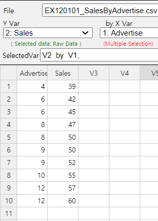
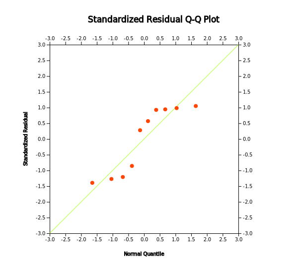
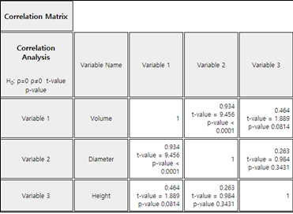

From Chapter 7 to Chapter 10, we discussed the estimation and the testing hypothesis of parameters such as population mean and variance for single variable.
This chapter describes a correlation analysis for two or more variables.
If variables are related with each other, then a regression analysis is described to see
how this association can be used. Simple linear regression analysis and multiple regression analysis are discussed.
The easiest way to observe the relation of two variables is to draw a scatter plot with one variable as X axis
and the other as Y axis. If two variables are related, data will gather together with a certain pattern, and if
not related, data will be scattered around. The correlation analysis is a method of analyzing the degree of
linear relationship between two variables. It is to investigate how linearly the other variable increases or
decreases as one variable increases.
Example 12.1.1
Based on the survey of advertising costs and sales for 10 companies that make the same product,
we obtained the following data as in Table 12.1.1. Using 『eStat』 , draw a scatter plot for this data
and investigate the relation of the two variables.
Table 12.1.1 Advertising costs and sales (unit: 1 million USD)
Company
Advertise (X)
Sales (Y)
1
4
39
2
6
42
3
6
45
4
8
47
5
8
50
6
9
50
7
9
52
8
10
55
9
12
57
10
12
60
[Ex] ⇨ eBook ⇨ EX120101_SalesByAdvertise.csv.
Answer
Using 『eStat』 , enter data as shown in <Figure 12.1.1>. If you select the Sales as 'Y Var' and the
Advertise 'by X Var' in the variable selection box that appears when you click the scatter plot icon on the
main menu, the scatter plot will appear as shown in <Figure 12.1.2>. As we can expect, the scatter
plot show that the more investments in advertising, the more sales increase, and not only that, the form of
increase is linear.

<Figure 12.1.1> Data input in 『eStat』
<Figure 12.1.2> Scatter plot of sales by advertise
The same analysis of scatter plot can be done using 『eStatU』 by following data input and clicking [Execute] button..
[]
The relation between two variables can be roughly investigated using a scatter plot like this.
However, a measure of the extent of the relation can be used together to provide a more accurate
and objective view of the relation between two variables. As a measure of the relation between
two variables, there is a covariance. The population covariance of the two variables \(X\) and \(Y\)
is denoted as \(Cov(X,Y)\). When the random samples of two variables are given as
\( (X_1 , Y_1 ) , (X_2 , Y_2 ), ... , (X_n , Y_n ) \), the estimate of the population covariance
using samples, which is called the sample covariance, \(S_{XY}\), is defined as follows:
$$\small
\begin{align}
S_{XY} &= \frac{1}{n-1} \sum_{i=1}^{n} ( X_i - \overline X )( Y_i - \overline Y ) \\
&= \frac{1}{n-1} ( \sum_{i=1}^{n} X_i Y_i - n {\overline X}{\overline Y} )
\end{align}
$$
In the above equation, \(\small \overline X\) and \(\small \overline Y\) represent the sample means of \(X\) and
\(Y\) respectively.
In order to understand the meaning of covariance, consider a case that \(Y\) increases if \(X\)
increases. If the value of \(X\) is larger than \(\small \overline X\) and the value of \(Y\) is larger than
\(\small \overline Y\), then \(\small (X - \overline X)(Y- \overline Y) \) always has a positive value. Also,
if the value of \(X\) is smaller than \(\small \overline X\) and the value of \(Y\) is smaller than
\(\small \overline Y\), then \(\small (X - \overline X)(Y- \overline Y) \) has a positive value. Therefore,
their mean value which is the covariance tends to be positive. Conversely, if the value of the
covariance is negative, the value of the other variable decreases as the value of one variable
increases. Hence, by calculating covariance, we can see the relation between two variables:
positive correlation (i.e., increasing the value of one variable will increase the value of
the other) or negative correlation (i.e., decreasing the value of the other).
Covariance itself is a good measure, but, since the covariance depends on the unit of \(X\) and \(Y\),
it makes difficult to interpret the covariance according to the size of the value and inconvenient
to compare with other data. Standardized covariance which divides the covariance by the standard
deviation of \(X\) and \(Y\), \(\sigma_{X}\) and \(\sigma_{Y}\), to obtain a measurement unrelated
to the type of variable or specific unit, is called the population correlation coefficient
and denoted as \(\rho\).
<Figure 12.1.3> shows different scatter plots and its values of the correlation coefficient.
<Figure 12.1.3> Different scatter plots and their correlation coefficients.
The correlation coefficient \(\rho\) is interpreted as follows:
1) \(\rho\) has a value between -1 and +1. A \(\rho\) value closer to +1 indicates a strong
positive linear relation and a \(\rho\) value closer to -1 indicates a strong negative linear
relation. Linear relationship weakens as the value of \(\rho\) is close to 0.
2) If all the corresponding values of \(X\) and \(Y\) are located on a straight line, the value of
\(\rho\) has either +1 (if the slope of the straight line is positive) or -1 (if the slope of
the straight line is negative).
3) The correlation coefficient \(\rho\) is only a measure of linear relationship between two
variables. Therefore, in the case of \(\rho\) = 0, there is no linear relationship between
the two variables, but there may be a different relationship. (see the scatter plot (f)
in <Figure 12.1.3>)
『eStatU』 provides a simulation of scatter plot shapes for different correlations as in <Figure 12.1.4>.
[Correlation Simulation]
<Figure 12.1.4> Simulation of correlation coefficient at 『eStatU』
An estimate of the population correlation coefficient using samples of two variables is called
the sample correlation coefficient and denoted as \(r\). The formula for the sample correlation
coefficient \(r\) can be obtained by replacing each parameter with the estimates in the formula
for the population correlation coefficient.
$$
r = \frac {S_{XY}} { S_X S_Y }
$$
where \(S_{XY}\) is the sample covariance and \(S_{X}\), \(S_{Y}\) are the sample standard
deviations of \(X\) and \(Y\) as follows:
$$\small
\begin{align}
S_{XY} &= \frac{1}{n-1} \sum_{i=1}^{n} (X_i - \overline X )(Y_i - \overline Y ) \\
S_X^2 &= \frac{1}{n-1} \sum_{i=1}^{n} (X_i - \overline X )^{2} \\
S_Y^2 &= \frac{1}{n-1} \sum_{i=1}^{n} (Y_i - \overline Y )^{2} \\
\end{align}
$$
Therefore, the formula \(r\) can be written as follows
$$\small
\begin{align}
r &= \frac {\sum_{i=1}^{n} (X_i - \overline X )(Y_i - \overline Y )} { \sqrt{\sum_{i=1}^{n} (X_i - \overline X )^{2} \sum_{i=1}^{n} (Y_i - \overline Y )^{2} } } \\
&= \frac {\sum_{i=1}^{n} X_i Y_i - n \overline X \overline Y } { \sqrt{\left (\sum_{i=1}^{n} X_{i}^{2} - n {\overline X}^2 \right) \left( \sum_{i=1}^{n} Y_{i}^{2} - n {\overline Y}^{2} \right) } }
\end{align}
$$
Example 12.1.2
Find the sample covariance and correlation coefficient for the advertising costs and sales of [Example 12.1.1].
Answer
To calculate the sample covariance and correlation coefficient, it is convenient to make the following table.
This table can also be used for calculations in regression analysis.
Table 12.1.2 A table for calculating the covariance
Number
\(X\)
\(Y\)
\(X^2\)
\(Y^2\)
\(XY\)
1
4
39
16
1521
156
2
6
42
36
1764
252
3
6
45
36
2025
270
4
8
47
64
2209
376
5
8
50
64
2500
400
6
9
50
81
2500
450
7
9
52
81
2704
468
8
10
55
100
3025
550
9
12
57
144
3249
684
10
12
60
144
3600
720
Sum
64
497
766
25097
4326
Mean
8.4
49.7
Terms which are necessary to calculate the covariance and correlation coefficient are as follows:
\(\small SXX, SYY, SXY \)represent the sum of squares of \(\small X\), the sum of squares of
\(\small Y\), the sum of squares of \(\small XY\). Hence, the covariance and
correlation coefficient are as follows:
\(\small \quad S_{XY} = \frac{1}{n-1} \sum_{i=1}^{n} (X_i - \overline X )(Y_i - \overline Y ) = \frac{151.2}{10-1} = 16.8 \)
\(\small \quad r = \frac {\sum_{i=1}^{n} (X_i - \overline X )(Y_i - \overline Y )} { \sqrt{\sum_{i=1}^{n} (X_i - \overline X )^{2} \sum_{i=1}^{n} (Y_i - \overline Y )^{2} } } = \frac{151.2} { \sqrt{ 60.4 × 396.1 } } = 0.978 \)
This value of the correlation coefficient is consistent with the scatter plot which shows a strong positive
correlation of the two variables.
Sample correlation coefficient \(r\) can be used for testing hypothesis of the population
correlation coefficient. The main interest in testing hypothesis of \(\rho\) is \(H_0 : \rho = 0\)
which tests the existence of linear correlation. This test can be done using \(t\) distribution
as follows:
Testing the population correlation coefficient \(\rho\):
Null Hypothesis: \(H_0 : \rho = 0\)
Test Statistic: \(\qquad t_0 = \sqrt{n-2} \frac{r}{\sqrt{1 - r^2 }}\),
\( \quad t_0 \) follows \(t\) distribution with \(n-2\) degrees of freedom
Example 12.1.3
In the Example 12.1.2, test the hypothesis that the population correlation coefficient between
advertising cost and the sales amount is zero at the significance level of 0.05.
(Since the sample correlation coefficient is 0.978 which is close to 1, this test will not be
required in practice.)
Answer
The value of the test statistic \(t\) is as follows:
Since it is greater than \(t_{8; 0.025}\) = 2.306, \(\small H_0 : \rho = 0\) should be rejected.
With the selected variables of 『eStat』 as <Figure 12.1.1>, click the regression icon
on the main menu, then the scatter plot with a regression line will appear. Clicking the
[Correlation and Regression] button below this graph will show the output as <Figure 12.1.5>
in the Log Area with the result of the regression analysis. The values of this result are slightly
different from the textbook, which is the error associated with the number of digits below the decimal
point. The same conclusion is obtained that the p-value for the correlation test is 0.0001,
less than the significance level of 0.05 and therefore, the null hypothesis is rejected.
<Figure 12.1.5> Testing hypothesis of correlation using 『eStat』
Practice 12.1.1
A professor of statistics argues that a student’s final test score can be predicted from his/her midterm.
Ten students were randomly selected and their mid-term and final exam scores are as follows:
id
Mid-term X
Final Y
1
92
87
2
65
71
3
75
75
4
83
84
5
95
93
6
87
82
7
96
98
8
53
42
9
77
82
10
68
60
[Ex] ⇨ eBook ⇨ PR120101_MidtermFinal.csv.
1) Draw a scatter plot of this data with the mid-term score on X axis and final score on Y axis. What do you think is the relationship between mid-term and final scores?
2) Find the sample correlation coefficient and test the hypothesis that the population correlation coefficient is zero with the significance level of 0.05.
If there are more than three variables in the analysis, the relationship can be viewed using the
scatter plots for each combination of two variables and the sample correlation coefficients can be
obtained. However, to make it easier to see the relationship between the variables, the correlations
between the variables can be arranged in a matrix format which is called a correlation matrix.
『eStat』 shows the result of a correlation matrix and the significance test for those values.
The result of the test shows the t value and p-value.
Example 12.1.4
Draw a scatter plot matrix and correlation coefficient matrix using four variables of the iris data
saved in the following location of 『eStat』.
[Ex] ⇨ eBook ⇨ EX120104_Iris.csv
The variables are Sepal.Length, Sepal.Width, Petal.Length, and Petal.Width. Test the hypothesis
whether the correlation coefficients are equal to zero.
Answer
From 『eStat』, load the data and click the 'Regression' icon. When the variable selection box appears,
select the four variables of Sepal.Length, Sepal.Width, Petal.Length, and Petal.Width, then the scatter
plot matrix will be shown as <Figure 12.1.6>.
It is observed that the Sepal.Length and the Petal.Length, and the Petal.Length and the Petal.Width
are related.
<Figure 12.1.6> Scatter plot matrix using 『eStat』
When selecting [Regression Analysis] button from the options below the graph, the basic statistics and
correlation coefficient matrix such as <Figure 12.1.7> appear in the Log Area with the test result.
It can be seen that all correlations are significant except the correlation coefficient between the
Sepal.Length and Sepal.Width.
<Figure 12.1.7> Descriptive statistics and correlation matrix using 『eStat』
Practice 12.1.2
A health scientist randomly selected 20 people to determine the effects of smoking and obesity on
their physical strength and examined the average daily smoking rate (\(x_1\), number/day),
the ratio of weight by height (\(x_2\), kg/m), and the time to exercise with a certain intensity (\(y\), in hours).
Draw a scatterplot matrix and test whether there is a correlation among smoking, obesity and
exercising time with a certain intensity.
Regression analysis is a statistical method that first establishes a reasonable mathematical model of
relationships between variables, estimates the model using measured values of the variables, and
then uses the estimated model to describe the relationship between the variables, or to apply it
to the analysis such as forecasting. For example, a mathematical model of the relationship between
sales (\(Y\)) and advertising costs (\(X\)) would not only explain the relationship between sales
and advertising costs, but would also be able to predict the amount of sales for a given investment.
Regression Analysis
Regression analysis is a statistical method that first establishes a reasonable mathematical
model of relationships between variables, estimates the model using measured values of the variables,
and then uses the estimated model to describe the relationship between the variables, or to apply
it to the analysis such as forecasting.
As such, the regression analysis is intended to investigate and predict the degree of relation
between variables and the shape of the relation. In regression analysis, a mathematical model of
the relation between variables is called a regression equation, and the variable affected
by other related variables is called a dependent variable. The dependent variable is
the variable we would like to describe which is usually observed in response to other variables,
so it is also called a response variable. In addition, variables that affect the dependent
variable are called independent variables. The independent variable is also referred to
as the explanatory variable, because it is used to describe the dependent variable.
In the previous example, if the objective is to analyse the change in sales amounts resulting
from increases and decreases in advertising costs, the sales amount is a dependent variable and
the advertising cost is an independent variable.
If the number of independent variables included in the regression equation is one, it is called a
simple linear regression. If the number of independent variables are two or more, it is called a
multiple linear regression.
12.2.1 Simple Linear Regression Model
Simple linear regression analysis has only one independent variable and the regression equation is shown
as follows:
$$
Y = f(X,\alpha,\beta) = \alpha + \beta X
$$
In other words, the regression equation is represented by the linear equation of the independent variable,
and \(\alpha\) and \(\beta\) are unknown parameters which represent the intercept and slope respectively.
The \(\alpha\) and \(\beta\) are called the regression coefficients. The above equation represents
an unknown linear relationship between \(Y\) and \(X\) in population and is therefore, referred to as
the population regression equation.
In order to estimate the regression coefficients \(\alpha\) and \(\beta\), observations of the dependent
and independent variable are required, i.e., samples. In general, all of these observations are not
located in a line. This is because, even if the \(Y\) and \(X\) have an exact linear relation,
there may be a measurement error in the observations, or there may not be an exact linear relationship
between \(Y\) and \(X\). Therefore, the regression formula can be written by considering these errors
together as follows:
$$
Y_i = \alpha + \beta X_i + \epsilon_{i}, \quad i=1,2,...,n
$$
where \(i\) is the subscript representing the \(i^{th}\) observation, and \(\epsilon_i\) is the
random variable indicating an error with a mean of zero and a variance \(\sigma^2\) which is
independent of each other. The error \(\epsilon_i\) indicates that the observation \(Y_i\) is
how far away from the population regression equation. The above equation includes unknown population
parameters \(\alpha\), \(\beta\) and \(\sigma^2\), and is therefore, referred to as a population
regression model.
If \(a\) and \(b\) are the estimated regression coefficients using samples, the fitted regression equation
can be written as follows: It is referred to as the sample regression equation.
$$
{\hat Y}_i = a + b X_i
$$
In this expression, \({\hat Y}_i\) represents the estimated value of \(Y\) at \(X=X_i\) as predicted
by the appropriate regression equation. These predicted values can not match the actual observed values
of \(Y\), and differences between these two values are called residuals and denoted as \(e_i\).
$$
\text{Residuals} \qquad e_i = Y_i - {\hat Y}_i , \quad i=1,2,...,n
$$
The regression analysis makes some assumptions about the unobservable error \(\epsilon_i\).
Since the residuals \(e_i\) calculated using the sample values have similar characteristics as
\(\epsilon_i\), they are used to investigate the validity of these assumptions. (Refer to Section
12.2.6 for residual analysis.)
12.2.2 Estimation of Regression Coefficient
When sample data, \((X_1 , Y_1 ) , (X_2 , Y_2 ) , ... , (X_n , Y_n ) \), are given, a straight line
representing it can be drawn in many ways. Since one of the main objectives of regression analysis is
prediction, we would like to use the estimated regression line that would make the residuals smallest
that the error occurs when predicting the value of Y. However, it is not possible to minimize the value
of the residuals at all points, and it should be chosen to make the residuals 'totally' smaller.
The most widely used of these methods is the method which minimizes the total sum of squared residuals,
that is called the method of least squares regression.
Method of Least Squares Regression
A method of estimating regression coefficients so that the total sum of the squared errors occurring
in each observation is minimized. i.e.,
\(\quad\) Find \(\alpha\) and \(\beta\) which minimize
To obtain the values of \(\alpha\) and \(\beta\) by the least squares method, the sum of squares
above should be differentiated partially with respect to \(\alpha\) and \(\beta\), and equate them zero
respectively. If the solution of \(\alpha\) and \(\beta\) of these equations is \(a\) and \(b\),
the equations can be written as follows:
$$
\begin{align}
a \cdot n + b \sum_{i=1}^{n} X_i &= \sum_{i=1}^{n} Y_i \\
a \sum_{i=1}^{n} X_i + b \sum_{i=1}^{n} X_i^2 &= \sum_{i=1}^{n} X_i Y_i \\
\end{align}
$$
The above expression is called a normal equation. The solution \(a\) and \(b\) of this normal
equation is called the least squares estimator of \(\alpha\) and \(\beta\) and is given as follows:
Least Squares Estimator of \(\alpha\) and \(\beta\)
\( \small
\quad b = \frac {\sum_{i=1}^{n} (X_i - \overline X ) (Y_i - \overline Y )} { \sum_{i=1}^{n} (X_i - \overline X )^2 } \)
\( \small \quad a = \overline Y - b \overline X \)
If we divide both the numerator and the denominator of \(b\) by \(n-1\), \(b\) can be written as
\(b = \frac{S_{XY}}{S_{X}^2}\). Since the correlation coefficient is \(r = \frac{S_{XY}}{S_X S_Y}\)
and therefore, the slope \(b\) can also be calculated by using the correlation coefficient as follows:
$$
b = \frac{S_{XY}}{S_X ^2} = \frac{ r S_X S_Y } {S_X ^2 } = r \frac{S_Y}{S_X}
$$
Example 12.2.1
In [Example 12.1.1], find the least squares estimate of the slope and intercept if the sales amount
is a dependent variable and the advertising cost is an independent variable. Predict the amount
of sales when you have spent on advertising by 10.
Answer
In [Example 12.1.1], the calculation required to obtain the intercept and slope has already been made.
The intercept and slope using this are as follows:
\(
\quad b = \small \frac {\sum_{i=1}^{n} (X_i - \overline X ) (Y_i - \overline Y )} { \sum_{i=1}^{n} (X_i - \overline X )^2 } \\
= \frac {151.2}{60.4} = 2.503
\)
\(
\quad a = \small \overline Y - b \overline X = 49.7 - 2.503 \times 8.4 = 28.672
\)
Therefore, the fitted regression line is \(\small \hat Y_i = 28.672 + 2.503 X_i \).
<Figure 12.2.1> shows the fitted regression line on the original data. The meaning of slope value, 2.5033, is that,
if advertising cost increases by one (i.e., one million), sales increases by about 2.5 million.
<Figure 12.2.1> Simple linear regression using 『eStat』
Prediction of the sales amount of a company with an advertising cost of 10 can be obtained by using the
fitted sample regression line as follows:
\(\quad \small 28.672 + (2.503)(10) = 53.702 \)
In other words, sales of 53.705 million are expected. That is not to say that all companies with
advertising costs of 10 million USD have sales of 53.705 million USD, but that the average amount of their
sales is about that. Therefore, there may be some differences in individual companies.
The same analysis of scatter plot can be done using 『eStatU』 by following data input and clicking [Execute] button..
[]
Practice 12.2.1
Using the data of [Practice 12.1.1] for the mid-term and final exam score, find the least squares
estimate of the slope and intercept if the final exam score is a dependent variable and the mid-term score
is an independent variable. Predict the final exam score when you have a mid-term score of 80.
12.2.3 Goodness of Fit for Regression Line
After estimating the regression line, it should be investigated how valid the regression line is. Since the
objective of a regression analysis is to describe a dependent variable as a function of an independent variable,
it is necessary to find out how much the explanation is. A residual standard error and a coefficient of
determination are used for such validation studies.
Residual standard error \(s\) is a measure of the extent to which observations are scattered around
the estimated line. First, you can define the sample variance of residuals as follows:
$$
s^2 = \frac{1}{n-2} \sum_{i=1}^{n} ( Y_i - {\hat Y}_i )^2
$$
The residual standard error \(s\) is defined as the square root of \(s^2\). The \(s^2\) is an estimate of
\(\sigma^2\) which is the extent that the observations \(Y\) are spread around the population regression
line. A small value of \(s\) or \(s^2\) indicates that the
observations are close to the estimated regression line, which in turn implies that the regression line represents well the
relationship between the two variables.
However, it is not clear how small the residual standard error \(s\) is, although the smaller value is
the better. In addition, the size of the value of \(s\) depends on the unit of \(Y\). To eliminate this
shortcoming, a relative measure called the coefficient of determination is defined. The coefficient
of determination is the ratio of the variation described by the regression line over the total
variation of observation \(Y_i\), so that it is a relative measure that can be used regardless of the
type and unit of the variable.
As in the analysis of variance in Chapter 9, the following partitions of the sum of squares and degrees of
freedom are formed in the regression analysis:
Partitions of the sum of squares and degrees of freedom
\(\qquad\) Sum of squares: \(\qquad SST = SSE + SSR\)
\(\qquad\) Degrees of freedom: \((n-1) = (n-2) + 1\)
Description of the above three sums of squares is as follows:
Total Sum of Squares : \( \small SST = \sum_{i=1}^{n} ( Y_i - {\overline Y} )^2\)
The total sum of squares indicating the total variation in observed values of \(Y\) is called the
total sum of squares (\(SST\)). This \(SST\) has the degree of freedom, \(n-1\), and if \(SST\)
is divided by the the degree of freedom, it becomes the sample variance of \(Y_i\).
Error Sum of Squares : \( \small SSE = \sum_{i=1}^{n} ( Y_i - {\hat Y}_i )^2\)
The error sum of squares (\(SSE\)) of the residuals represents the unexplained variation of the
total variation of the \(Y\). Since the calculation of this sum of squares requires the estimation of
two parameters \(\alpha\) and \(\beta\), \(SSE\) has the degree of freedom \(n-2\).
This is the reason why, in the calculation of the sample variance of residuals \(s^2\), it was divided
by \(n-2\).
Regression Sum of Squares : \( \small SSR = \sum_{i=1}^{n} ( {\hat Y}_i - {\overline Y} )^2 \)
The regression sum of squares (\(SSR\)) indicates the variation explained by the regression line
among the total variation of \(Y\). This sum of squares has the degree of freedom of 1.
If the estimated regression equation fully explains the variation in all samples (i.e., if all
observations are on the sample regression line), the unexplained variation \(SSE\) will be zero. Thus,
if the portion of \(SSE\) is small among the total sum of squares \(SST\), or if the portion of
\(SSR\) is large, the estimated regression model is more suitable. Therefore, the ratio of \(SSR\)
to the total variation \(SST\), called the coefficient of determination, is defined as a
measure of the suitability of the regression line as follows:
$$
R^2 = \frac{Explained \;\; Variation}{Total \;\; Variation} = \frac{SSR}{SST}
$$
The value of the coefficient of determination is always between 0 and 1 and the closer the value is to 1,
the more concentrated the samples are around the regression line, which means that the estimated
regression line explains the observations well.
Example 12.2.2
Calculate the value of the residual standard error and the coefficient of determination in the data on advertising costs and sales.
Answer
To obtain the residual standard error and the coefficient of determination, it is convenient to make the
following Table 12.2.1. Here, the estimated value \(\small {\hat Y}_i\) of the sales from each value of
\(\small {X}_i\) uses the fitted regression line.
In Table 12.2.1, \(\small SST\) = 396.1, \(\small SSR\) = 378.429, \(\small SSE\) = 17.622. Here,
the relationship of \(\small SST = SSE + SSR\) does not exactly match because of the error in the
number of digits calculation. The sample variance of residuals is as follows:
This means that 95.6% of the total variation in the observed 10 sales amounts can be explained by the
simple linear regression model using a variable of advertising costs, so this regression line is quite
useful.
Click the [Correlation and Regression] button in the option below the graph of <Figure 12.2.1> to
show the coefficient of determinations and estimation errors shown in <Figure 12.2.2>.
<Figure 12.2.2> Correlation and descriptive statistics
Practice 12.2.2
Using the data of [Practice 12.1.1] for the mid-term and final exam scores, calculate the value
of the residual standard error and coefficient of determination.
12.2.4 Analysis of Variance for Regression
If we divide three sums of squares obtained in the above example by its degrees of freedom, each one
becomes a kind of variance. For example, if you divide the \(SST\) by \(n-1\) degrees of freedom,
then it becomes the sample variance of the observed values \(Y_1 , Y_2 , ... , Y_n\). If you divide
the \(SSE\) by \(n-2\) degrees of freedom, it becomes \(s^2\) which is an estimate of the variance
of error \(\sigma^2\). For this reason, addressing the problems associated with the regression
using the partition of the sum of squares is called the ANOVA of regression. Information required
for ANOVA, such as calculated sum of squares and degrees of freedom, can be compiled in the ANOVA
table as shown in Table 12.2.2.
Table 12.2.2 Analysis of variance table for simple linear regression
Source
Sum of squares
Degrees of freedom
Mean Squares
F value
Regression
SSR
1
MSR =\(\frac{SSR}{1}\)
\(F_0 = \frac{MSR}{MSE}\)
Error
SSE
\(n-2\)
MSE = \(\frac{SSE}{n-2}\)
Total
SST
\(n-1\)
The sum of squares divided by its degrees of freedom is referred to as mean squares, and Table 12.2.2
defines the regression mean squares (\(MSR\)) and error mean squares (\(MSE\)) respectively. As the
expression indicates, \(MSE\) is the same statistic as \(s^2\) which is the estimate of \(\sigma^2\).
The \(F\) value given in the last column are used for testing hypothesis
\(H_0: \beta = 0 ,\; H_1 : \beta \ne 0 \). If \(\beta\) is not 0, the \(F\) value can be expected
to be large, because the assumed regression line is valid and the variation of \(Y\) is explained
in large part by the regression line. Therefore, we can reversely decide that \(\beta\) is not zero
if the calculated \(F\) ratio is large enough. If the assumptions about the error terms mentioned
in the population regression model are valid and if the error terms follows a normal distribution,
the distribution of \(F\) value, when the null hypothesis is true, follows distribution
with 1 and \(n-2\) degrees of freedom. Therefore, if \(F_0 > F_{1,n-2; α}\), then we can reject
\(H_0 : \beta = 0\) .
(In 『eStat』, the \(p\)-value for this test is calculated and the decision can be made using this
\(p\)-value. That is, if the \(p\)-value is less than the significance level, the null hypothesis
\(H_0\) is rejected.)
Example 12.2.3
Prepare an ANOVA table for the example of advertising cost and test it using the 5% significance level.
Answer
Using the sum of squares calculated in [Example 12.2.2], the ANOVA table is prepared as follows:
Source
Sum of squares
Degrees of freedom
Mean Squares
\(\small F\) value
Regression
378.42
1
MSR = \(\frac{378.42}{1}\) = 378.42
\(F_0 = \frac{378.42}{2.20}\)
Error
17.62
10-2
MSE = \(\frac{17.62}{8} = 2.20\)
Total
396.04
10-1
Since the calculated \(\small F\) value of 172.0 is much greater than \(\small F_{1,8; 0.05} = 5.32 \),
we reject the null hypothesis \(\small H_0 : \beta = 0\) with the significance level \(\alpha\) = 0.05.
Click the [Correlation and Regression] button in the options window below the graph <Figure 12.2.1>
to show the result of the ANOVA as shown in <Figure 12.2.3>.
<Figure 12.2.3> Regression Analysis of Variance using 『eStat』
Practice 12.2.3
Using the data of [Practice 12.1.1] for the mid-term and final exam scores, prepare an ANOVA table
and test it using the 5% significance level.
12.2.5 Inference for Regression
One assumption of the error term \(\epsilon\) in the population regression model is that it follows
a normal distribution with the mean of zero and variance of \(\sigma^2\). Under this assumption
the regression coefficients and other parameters can be estimated and tested. Note that, under the
assumption above, the regression model \(Y = \alpha + \beta X + \epsilon \) follows a normal
distribution with the mean \(\alpha + \beta X \) and variance \(\sigma^2\).
1) Inference for the parameter
The parameter \(\beta\), which is the slope of the regression line, indicates the existence and extent
of a linear relationship between the dependent and the independent variables. The inference for \(\beta\)
can be summarized as follows: Especially, the test for hypotheses \(H_0 : \beta = 0\) is used whether
the independent variable describes the dependent variable significantly. The \(F\) test for the hypothesis
\(H_0 : \beta = 0\) described in the ANOVA of regression is theoretically the same as in the test below.
『eStat』 calculates the \(p\)-value under the null hypothesis. If this \(p\)-value is less
than the significance level, the null hypothesis is rejected and the regression line is said to be
significant.
Inference for the parameter \(\; \beta\)
Point estimate: \(\small \quad b = \frac {\sum_{i=1}^{n} (X_i - \overline X) (Y_i - \overline Y)} { \sum_{i=1}^{n} (X_i - \overline X)^2 } , \quad b \sim N(\beta, \frac{\sigma^2} {\sum_{i=1}^{n} (X_i - \overline X )^2 } ) \)
Standard error of estimate \(b\): \(\small \quad SE(b) = \frac{s}{\sqrt {{\sum_{i=1}^{n} (X_i - \overline X)^2} } }\)
Confidence interval of \(\; \beta\): \(\quad b \pm t_{n-2; α/2} \cdot SE(b)\)
Testing hypothesis:
\(\quad\) Null hypothesis: \(\quad H_0 : \beta = \beta_0\)
\(\quad\) Test statistic: \(\quad t = \frac{b - \beta_0 } { SE (b) }\)
\(\quad\) rejection region:
\(\qquad\) if \(H_1 : \beta \lt \beta_0\), then \(\; t < - t_{n-2; α}\)
\(\qquad\) if \(H_1 : \beta \gt \beta_0\), then \(\; t > t_{n-2; α}\)
\(\qquad\) if \(H_1 : \beta \ne \beta_0\), then \(\; |t| > t_{n-2; α/2}\)
2) Inference for the parameter \(\alpha\)
The inference for the parameter \(\alpha\), which is the intercept of the regression line, can be
summarized as below. The parameter \(\alpha\) is not much of interest in most of the analysis,
because it represents the average value of the response variable when an independent variable is 0.
Inference for the parameter \(\; \alpha\)
Point estimate: \(\quad \small a = \overline Y - b \overline X , \quad a \sim N( \alpha, ( \frac{1}{n} + \frac {{\overline X }^2} { \sum_{i=1}^{n} (X_i - \overline X )^2 } ) \cdot \sigma^2 ) \)
Standard error of estimate \(a\): \(\small \quad SE(a) = s \cdot \sqrt {\frac{1}{n} + \frac {{\overline X }^2} { \sum_{i=1}^{n} (X_i - \overline X )^2 } ) } \)
Confidence interval of \(\; \alpha\): \(\quad a \pm t_{n-2; α/2} \cdot SE(a)\)
Testing hypothesis:
\(\quad\) Null hypothesis: \(\quad H_0 : \alpha = \alpha_0\)
\(\quad\) Test statistic: \(\quad t = \frac{a - \alpha_0 } { SE (a) }\)
\(\quad\) rejection region:
\(\qquad\) if \(H_1 : \alpha \lt \alpha_0\), then \(\; t < - t_{n-2; α}\)
\(\qquad\) if \(H_1 : \alpha \gt \alpha_0\), then \(\; t > t_{n-2; α}\)
\(\qquad\) if \(H_1 : \alpha \ne \alpha_0\), then \(\; |t| > t_{n-2; α/2}\)
3) Inference for the average of \(Y\)
At any point in \(X = X_0\), the dependent variable \(Y\) has an average value
\(\mu_{Y|x} = \alpha + \beta X_0\). Estimation of \(\mu_{Y|x}\) is also considered as an
important parameter, because it means predicting the mean value of \(Y\) .
Inference for the average value \(\; \mu_{Y|x} = \alpha + \beta X_0\)
Point estimate: \(\quad {\hat Y}_0 = a + b X_0 \)
Standard error of estimate \({\hat Y}_0\): \(\small \quad SE({\hat Y}_0) = s \cdot \sqrt { \frac{1}{n} + \frac { (X_0 - \overline X )^2} { \sum_{i=1}^{n} (X_i - \overline X )^2 } } \)
Confidence interval of \(\; \mu_{Y|x}\): \(\quad {\hat Y}_0 \pm t_{n-2; α/2} \cdot SE ({\hat Y}_0 )\)
The confidence interval formula of the mean value \(\mu_{Y|x}\) depends on the value of the \(X\)
given the standard error of the estimate, so the width of the confidence interval depends on the value
of the given \(X\). As the formula for the standard error shows, this width is the narrowest at a time
\(\small X = \overline X\), and if \(X\) is the farther away from \(\small \overline X\), the wider it becomes.
If we calculate the confidence interval for the mean value of \(Y\) at each point of \(X\), and then
if we connect the upper and lower limits to each other, we have a confidence band of the
regression line on the above and below of the sample regression line.
Example 12.2.4
Let's make inferences about each parameter with the result of a regression analysis of the previous
data for the sales amount and advertising costs. Use 『eStat』 to check the test result and confidence band.
Answer
1) Inference for \(\beta\)
The point estimate of \(\beta\) is \(b\) = 2.5033 and the standard error of \(b\) is as follows:
Hence, the 95% confidence interval of \(\beta\) using \(t_{8; 0.025} \) = 2.056 is as follows:
\(\quad \small 2.5033 \pm (2.056)(0.1908)\)
\(\quad \small 2.5033 \pm 0.3922\)
\(\quad\) i.e. the interval (2.1110, 2.8956).
The test statistic for the hypothesis \(\small H_0 : \beta = 0\), is as follows:
\(\quad t= \frac{2.5033 - 0}{0.1908}\) = 13.12
Since \(t_{8; 0.025} \) = 2.056, the null hypothesis \(\small H_0 : \beta = 0\) is rejected with
the significance level of \(\alpha\) = 0.05. This result of two sided test can be obtained from
the confidence interval. Since 95％ confidence interval (1.7720, 3.2346) do not include 0,
the null hypothesis \(\small H_0 : \beta = 0\) can be rejected.
2) Inference for \(\alpha\)
The point estimate of \(\alpha\) is \(a\) = 29.672 and its standard error is as follows:
Since the value of \(t\) statistic is \(\frac{29.672}{1.67}\) = 17.1657 and \(t_{8; 0.025}\) = 2.056,
the null hypothesis \(\small H_0 : \alpha = 0\) is also rejected with the significance level
\(\alpha\) = 0.05.
3) Inference for the average value of \(\small Y\)
In 『eStat』 , the standard error of \(\small \hat Y\), which is the estimate of \(\mu_{Y|x}\),
is calculated at each point of \(\small X\). For example, the point estimate of \(\small Y\) at \(\small X\) = 8 is
\(\small \hat Y\) = 28.672 + 2.503 × 8 = 48.696 and its standard error is 0.475.
As we discussed, the confidence interval becomes wider as \(\small X\) is far from \(\small \overline X\).
If you select the [Confidence Band] button from the options below the regression graph of <Figure
12.2.1>, you can see the confidence band graph on the scatter plot together with regression line as
<Figure 12.2.4>. If you click the [Correlation and Regression] button, the inference result of each
parameter will appear in the Log Area as shown in <Figure 12.2.5>.
<Figure 12.2.4> Confidence band using 『eStat』
<Figure 12.2.5> Testing hypothesis of regression coefficients
Practice 12.2.4
Using the data in [Practice 12.1.1] for the mid-term and final exam scores, make inferences
about each parameter using 『eStat』 and draw the confidence band.
12.2.6 Residual Analysis
The inference for each regression parameter in the previous section is all based on some assumptions
about the error term \(\epsilon\) included in the population regression model. Therefore, the satisfaction
of these assumptions is an important precondition for making a valid inference. However,
because the error term is unobservable, the residuals as estimate of the error term are used to investigate
the validity of these assumptions which are referred to as a residual analysis.
First, let's look at the assumptions in the regression model.
\(\quad \) Assumptions in regression model
\(\quad \;\; A_1\): The assumed model \(Y = \alpha + \beta X + \epsilon\) is correct.
\(\quad \;\; A_2\): The expectation of error terms \(\epsilon_i\) is 0.
\(\quad \;\; A_3\): (Homoscedasticity) The variance of \(\epsilon_i\) is \(\sigma^2\) which is the same for all \(X\).
\(\quad \;\; A_4\): (Independence) Error terms \(\epsilon_i\) are independent.
\(\quad \;\; A_5\): (Normality) Error terms \(\epsilon_i\)’s are normally distributed.
Review the references for the meaning of these assumptions. The validity of these assumptions is generally
investigated using scatter plots of the residuals. The following scatter plots used primarily for each
assumption:
\(\quad \)1) Residuals versus predicted values (i.e., \(e_i\) vs \(\hat Y_i\)) : \(\quad A_3\)
\(\quad \)2) Residuals versus independent variables (i.e., \(e_i\) vs \(X_i\)) : \(\quad A_1\)
\(\quad \)3) Residuals versus observations (i.e., \(e_i\) vs \(i\)) : \(\quad A_2 , A4\)
In the above scatter plots, if the residuals show no particular trend around zero, and appear randomly,
then each assumption is valid.
The assumption that the error term \(\epsilon\) follows a normal distribution can be investigated
by drawing a histogram of the residuals in case of a large amount of data to see if the distribution
is similar to the shape of the normal distribution. Another method is to use the quantile–quantile (Q-Q)
scatter plot of the residuals. In general, if the Q-Q scatter plot of the residuals forms a straight line,
it can be considered as a normal distribution.
Since residuals are also dependent on the unit of the dependent variable, standardized values of
the residuals are used for consistent analysis of the residuals, which are called standardized residuals.
Both the scatter plots of the residuals described above and the Q-Q scatter plot are created using
the standardized residuals. In particular, if the value of the standardized residuals is outside
the \(\pm\)2, an anomaly value or an outlier value can be suspected.
Example 12.2.5
Draw a scatter plot of residuals and a Q-Q scatter plot for the advertising cost example.
Answer
When you click the [Residual Plot] button from the options below the regression graph of <Figure 12.2.1>,
the scatter plot of the standardized residuals and predicted values are appeared as shown in <Figure 12.2.6>.
If you click [Residual Q-Q Plot] button, <Figure 12.2.7> is appeared. Although the scatter plot of
the residuals has no significant pattern, the Q-Q plot deviates much from the straight line and so, the
normality of the error term is somewhat questionable. In such cases, the values of the response variable
need to be re-analyzed by taking logarithmic or square root transformation.
<Figure 12.2.6> Residual plot

<Figure 12.2.7> Residual Q-Q Plot
Practice 12.2.5
Using the data in [Practice 12.1.1] for the mid-term and final exam scores, draw a scatter plot
of the residuals and a Q-Q scatter plot.
In 『eStatU』 it is possible to do experiments on how much a regression line is affected by an extreme point
(<Figure 12.2.8>). A point can be created by clicking the mouse on the screen in the link below. If you
create multiple dots, you can see how much the regression line changes each time. You can observe how sensitive
the correlation coefficient and the coefficient of determination are as you move a point along with the mouse.
[Regression Experiment ]
<Figure 12.2.8> Simulation experiment of regression analysis at 『eStatU』
For actual applications of the regression analysis, the multiple regression models with two or more
independent variables are more frequently used than the simple linear regression with one independent
variable. This is because it is rare for a dependent variable to be sufficiently explained by a single
independent variable, and in most cases, a dependent variable has a relationship with several
independent variables. For example, it may be expected that sales will be significantly affected
by advertising costs, which are examples of simple linear regression, but will also be affected
by product quality ratings, the number and size of stores sold. The statistical model used to identify
the relationship between one dependent variable and several independent variables is called a multiple
linear regression analysis. However, the simple linear regression and multiple linear regression
analysis differ only in the number of independent variables involved, and there is no difference in
the method of analysis.
12.3.1 Multiple Linear Regression Model
In the multiple linear regression model, it is assumed that the dependent variable \(Y\) and \(k\)
number of independent variables have the following relational formulas:
$$
Y_i = \beta_0 + \beta_1 X_{i1} + \cdots + \beta_k X_{ik} + \epsilon_i
$$
This means that the dependent variable is represented by the linear function of independent variables
and a random variable that represents the error term as in the simple linear regression model.
The assumption of the error terms is the same as the assumption in the simple linear regression.
In the above equation, \(\beta_0\) is the intercept of \(Y\) axis and \(\beta_i\) is the slope of the Y axis
and \(X_i\) which indicates the effect of \(X_i\) to \(Y\) when other independent variables are fixed.
Example 12.3.1
When logging trees in forest areas, it is necessary to investigate the amount of timber in those areas.
Since it is difficult to measure the volume of a tree directly, we can think of ways to estimate the
volume using the diameter and height of a tree that is relatively easy to measure. The data in
Table 12.3.1 are the values for measuring diameter, height and volume after sampling of 15 trees in a
region. (The diameter was measured at a point 1.5 meters above the ground.) Draw a scatter plot matrix
of this data and consider a regression model for this problem.
Table 12.3.1 Diameter, height and volume of tree
Diameter(\(cm\))
Height(\(m\))
Volume(\(m^3\))
21.0
21.33
0.291
21.8
19.81
0.291
22.3
19.20
0.288
26.6
21.94
0.464
27.1
24.68
0.532
27.4
25.29
0.557
27.9
20.11
0.441
27.9
22.86
0.515
29.7
21.03
0.603
32.7
22.55
0.628
32.7
25.90
0.956
33.7
26.21
0.775
34.7
21.64
0.727
35.0
19.50
0.704
40.6
21.94
1.084
[Ex] ⇨ eBook ⇨ EX120301_TreeVolume.csv.
Answer
Load the data saved at the following location of 『eStat』.
[Ex] ⇨ eBook ⇨ EX120301_TreeVolume.csv
In the variable selection box which appears by selecting the regression icon, select 'Y variable'
by volume and select ‘by X variable’ as the diameter and height to display a scatter plot matrix
as shown in <Figure 12.3.1>. It can be observed that there is a high correlation between
volume and diameter, and that volume and height, and diameter and height are also somewhat related.
<Figure 12.3.1> Scatterplot matrix

<Figure 12.3.2> Correlation matrix
Since the volume is to be estimated using the diameter and height of the tree, the volume is
the dependent variable \(\small Y\), and the diameter and height are independent variables
\(\small X_1 , X_2\) respectively, and the following regression model can be considered.
The same analysis of multiple linear regression can be done using 『eStatU』 by following data input and clicking [Execute] button..
[]
Practice 12.3.1
A health scientist randomly selected 20 people to determine the effect of smoking and obesity on
their physical strength and examined the average daily smoking rate (\(x_1\), number/day),
the ratio of weight by height (\(x_2\), kg/m), and the time to continue to exercise with
a certain intensity (\(y\), in hours). Draw a scatter plot matrix of this data and consider
a regression model for this problem.
In general, matrix and vectors are used to facilitate expression of formula and calculation of
expressions. For example, if there are \(k\) number of independent variables, the population multiple
regression model at the observation point \(i=1,2,...,n\) is presented in a simple manner as follows:
$$
\mathbf {Y = X} \boldsymbol{\beta + \epsilon}
$$
In a multiple regression analysis, it is necessary to estimate the \(k+1\) number of regression
coefficients \(\beta_0 , \beta_1 , ... , \beta_k\) using samples. In this case, the least squares method
which minimizes the sum of the squared errors is also used. We find \(\boldsymbol \beta\) which minimizes
the following sum of the error squares as follows:
$$
S = \sum_{i=1}^{n} \epsilon_{i}^2 = {\boldsymbol \epsilon ' \boldsymbol \epsilon} = ( \bf Y - \bf X' \boldsymbol \beta )'( \bf Y - \bf X' \boldsymbol \beta )
$$
As in the simple linear regression, the above error sum of squares is differentiated with respect to
\(\boldsymbol \beta\) and then equate to zero which is called a normal equation. The solution of
the equation, denoted as \(\bf b\) which is called the least squares estimate of \(\boldsymbol \beta\),
should satisfy the following normal equation.
$$
\bf {(X'X) b = X'y}
$$
Therefore, if there exists an inverse matrix of \(\bf {X'X}\), the least squares estimator of
\(\boldsymbol \beta\), \(\bf b\), is as follows:
$$
\bf {b = (X'X)^{-1} X'y}
$$
(Note: Statistical packages uses a different formula, because the above formula causes large amount
of computing error)
If the estimated regression coefficients are \({\bf b} = (b_0 , b_1 , ... , b_k )\), the estimate of
the response variable \(Y\) is as follows:
$$
{\hat Y}_i = b_0 + b_1 X_{i1} + \cdots + b_k X_{ik}
$$
The residuals are as follows:
$$
\begin{align}
e_i &= Y_i - {\hat Y}_i \\
&= Y_i - (b_0 + b_1 X_{i1} + \cdots + b_k X_{ik} )
\end{align}
$$
By using a vector notation, the residual vector \(\bf e\) can be defined as follows:
$$
\bf {e = Y - X b}
$$
12.3.3 Goodness of Fit for Regression and Analysis of Variance
In order to investigate the validity of the estimated regression line in the multiple regression analysis,
the standardized residual error and coefficient of determination are also used. In the simple linear
regression analysis, the computational formula for these measures was given as a function of the residuals,
i.e., observed value of \(Y\) and its predicted value, there is nothing to do with the number of
independent variables. Therefore, the same formula can be used in the multiple linear regression and
there is only a difference in the value of the degrees of freedom that each sum of squares has.
In the multiple linear regression analysis, the standard error of residuals is defined as follows:
$$
s = \sqrt { \frac{1}{n-k-1} \sum_{i=1}^{n} (Y_i - {\hat Y}_i )^2}
$$
The difference from the simple linear regression is that the degrees of freedom for residuals is
\(n-k-1\), because the \(k\) number of regression coefficients must be estimated in order to calculate
residuals. As in simple linear regression, \(s^2\) is a statistic such as the residual mean squares
(\(MSE\)). The coefficient of determination is given in \(R^2 = \frac{SSR}{SST}\)
and its interpretation is as shown in the simple linear regression.
The sum of squares is defined by the same formula as in the simple linear regression, and can be divided with
corresponding degrees of freedom as follows and the table of the analysis of variance is shown in Table 12.3.2.
\(\quad\) Sum of squares \(\quad \quad \;\;SST = SSE + SSR\)
\(\quad\) Degrees of freedom \(\quad (n-1) = (n-k-1) + k\)
Table 12.3.2 Analysis of variance table for multiple linear regression analysis
Source
Sum of squares
Degrees of freedom
Mean Squares
F value
Regression
SSR
\(k\)
MSR = \(\frac{SSR}{k}\)
\(F_0 = \frac{MSR}{MSE}\)
Error
SSE
\(n-k-1\)
MSE = \(\frac{SSE}{n-k-1}\)
Total
SST
\(n-1\)
The \(F\) value in the above ANOVA table is used to test the significance of the regression equation,
where the null hypothesis is that all independent variables are not linearly related to the dependent variables.
$$
\begin{align}
H_0 &: \beta_1 = \beta_2 = \cdots = \beta_k = 0 \\
H_1 &: \text{At least one of } k \text { number of } \beta_i \text{s is not equal to 0}
\end{align}
$$
Since \(F_0\) follows \(F\) distribution with \(k\) and \((n-k-1)\) degrees of freedom under the null
hypothesis, we can reject \(H_0\) at the significance level \(\alpha\) if \(F_0 \gt F_{k,n-k-1 ; α}\).
Each \(\beta_i\) can also be tested which is described in the following sections. (Also, 『eStat』
calculates the \(p\)-value for this test, so use this \(p\)-value to test. That is, if the \(p\)-value
is less than the significance level, the null hypothesis is rejected.)
12.3.4 Inference for Multiple Linear Regression
Parameters that are of interest in multiple linear regression, as in the simple linear regression, are the
expected value of Y and each regression coefficients \(\beta_0 = \beta_1 = \cdots = \beta_k\). The
inference of these parameters \(\beta_0 = \beta_1 = \cdots = \beta_k\) is made possible by
obtaining a probability distribution of the point estimates \(b_i\). Under the assumption that the
error terms \(\epsilon_i\) are independent and all have a distribution of \(N(0, \sigma^2 )\),
it can be shown that the distribution of \(b_i\) is as follows:
$$
b_i \sim N( \beta_i , c_{ii} \cdot \sigma^2 ), \quad i=0,1,2,...,k
$$
The above \(c_{ii}\) is the \(i^{th}\) diagonal element of the \((k+1)\times (k+1)\) matrix
\(\bf {(X'X)^{-1}}\). In addition, using an estimate \(s^2\) instead of a parameter \(\sigma^2\),
you can make inferences about each regression coefficient using the \(t\) distribution.
Inference on regression coefficient \(\; \beta_i\)
Point estimate: \(\quad b_i \)
Standard error of estimate \(b\): \(\quad SE(b_i) = \sqrt c_{ii} \cdot s \)
Testing hypothesis:
\(\quad\) Null hypothesis: \(\quad H_0 : \beta_i = \beta_{i0}\)
\(\quad\) Test statistic: \(\quad t = \frac{b_i - \beta_{i0} } { SE (b_i) }\)
\(\quad\) rejection region:
\(\qquad\) if \(\; H_1 : \beta_i \lt \beta_{i0}\), then \(\; t < - t_{n-k-1; α}\)
\(\qquad\) if \(\; H_1 : \beta_i \gt \beta_{i0}\), then \(\; t > t_{n-k-1; α}\)
\(\qquad\) if \(\; H_1 : \beta_i \ne \beta_{i0}\), then \(\; |t| > t_{n-k-1; α/2}\)
(Since 『eStat』 calculates the \(p\)-value under the null hypothesis \(H_0 : \beta_i = \beta_{i0}\),
\(p\)-value is used for testing hypothesis. )
Residual analysis of the multiple linear regression is the same as in the simple linear regression.
Example 12.3.2
For the tree data of [Example 12.3.1], obtain the least squares estimate of each coefficient of
the proposed regression equation using 『eStat』 and apply the analysis of variance, test for
goodness of fit and test for regression coefficients.
Answer
In the options window below the scatter plot matrix in <Figure 12.3.1>, click [Regression Analysis]
button. Then you can find the estimated regression line, ANOVA table as shown in <Figure 12.3.3> in
the Log Area. The estimated regression equation is as follows:
In the above equation, 0.037 represents the increase of the volume of the tree when the diameter
(\(\small X_1\)) increases 1(cm).
The \(p\)-value calculated from the ANOVA table in <Figure 12.3.3> at \(\small F\) value of 73.12
is less than 0.0001, so you can reject the null hypothesis \(\small H_0 : \beta_1 = \beta_{2} = 0\)
at the significance level \(\alpha\) = 0.05. The coefficient of determination, \(\small R^2\) = 0.924,
implies that 92.4% of the total variances of the dependent variable are explained by the
regression line. Based on the above two results, we can conclude that the diameter and height of
the tree are quite useful in estimating the volume.
<Figure 12.3.3> Result of Multiple Linear Regression
Since \(\small {SE}(b_1 ) = 0.003, \; {SE} (b_2 ) = 0.008 \) and \(t_{12; 0.025}\) = 2.179 from
the result in <Figure 12.3.3>, the 95% confidence intervals for each regression
coefficients can be calculated as follows: The difference between this result and the
<Figure 12.3.3> due to the error in the calculation below the decimal point.
In the hypothesis test of \(\small H_0 : \beta_i = 0 , \;\; H_1 : \beta_i \ne 0\) , each \(p\)-value is
less than the significance level of 0.05, so you can reject each null hypothesis.
The scatter plot of the standardized residuals is shown in <Figure 12.3.4> and the Q-Q scatter
plot is shown in <Figure 12.3.5>. There is no particular pattern in the scatter plot of the
standardized residuals, but there is one outlier value, and the Q-Q scatter plot shows that the
assumption of normality is somewhat satisfactory.
<Figure 12.3.4> Residual analysis of multiple linear regression
<Figure 12.3.5> Q-Q plot of multiple linear regression
Practice 12.3.2
Apply a multiple regression model by using 『eStat』 on the regression model of [Practice 12.3.1].
Obtain the least squares estimate of each coefficient of the proposed regression equation and
apply the analysis of variance, test for goodness of fit and test for regression coefficients.